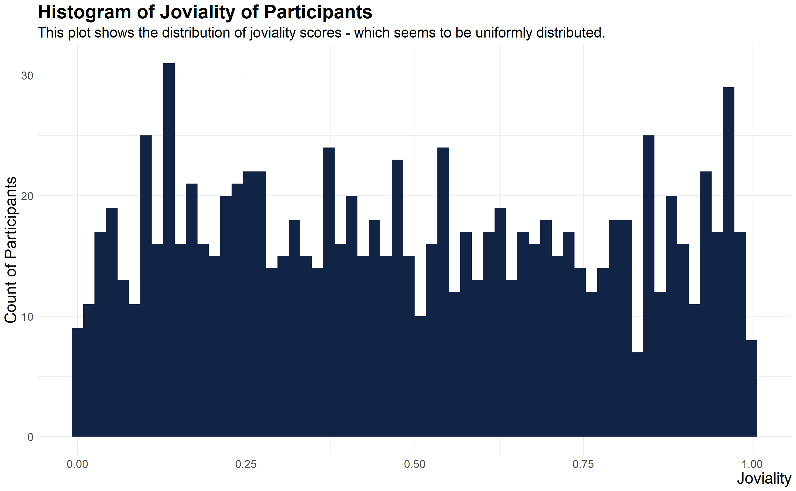
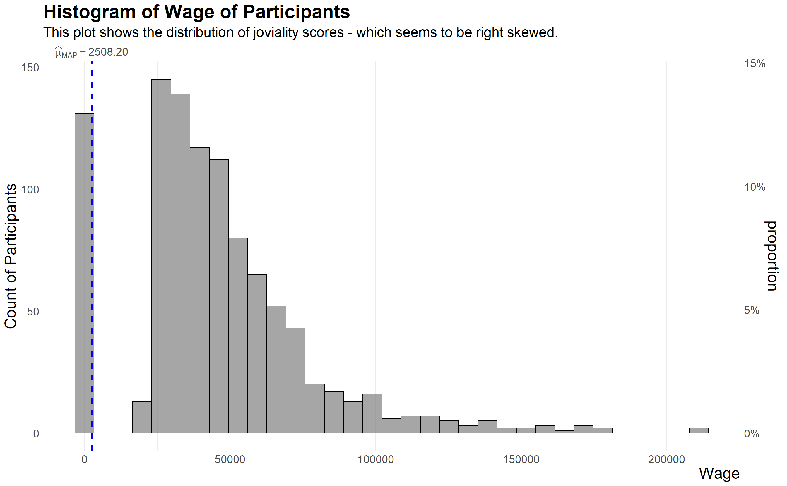
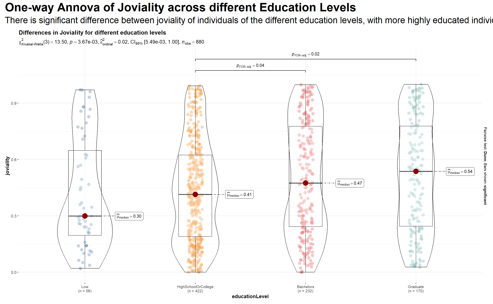
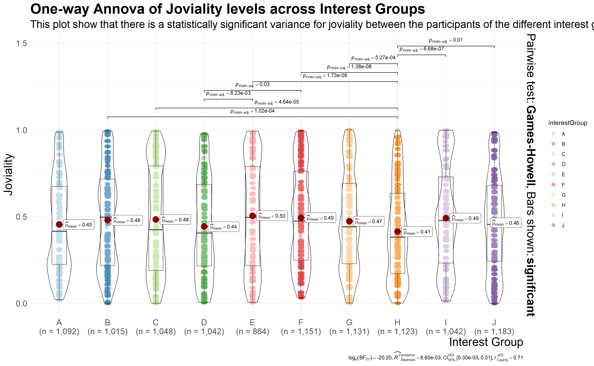
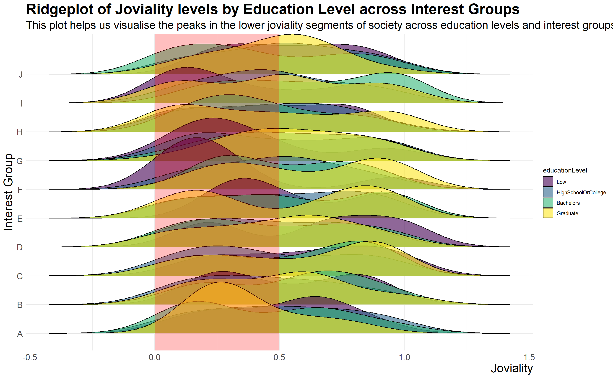
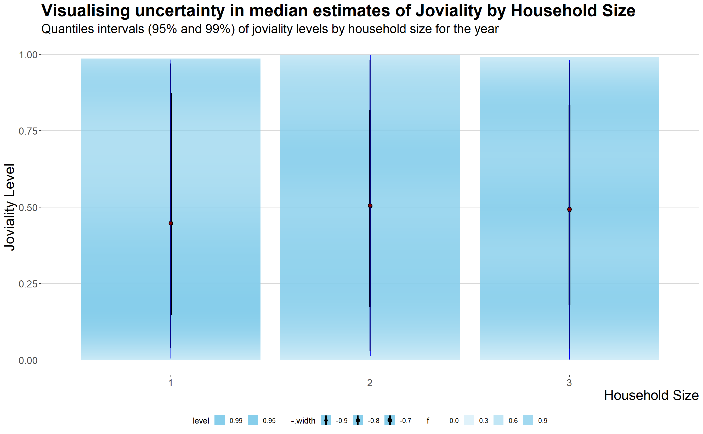
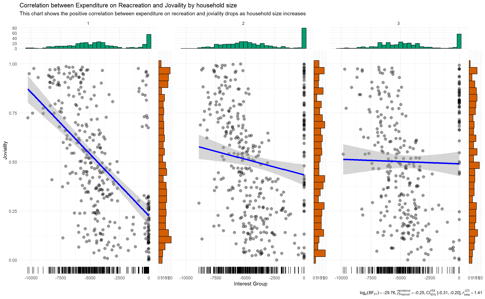
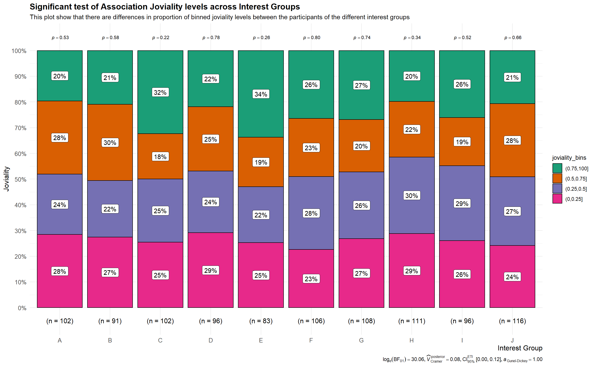
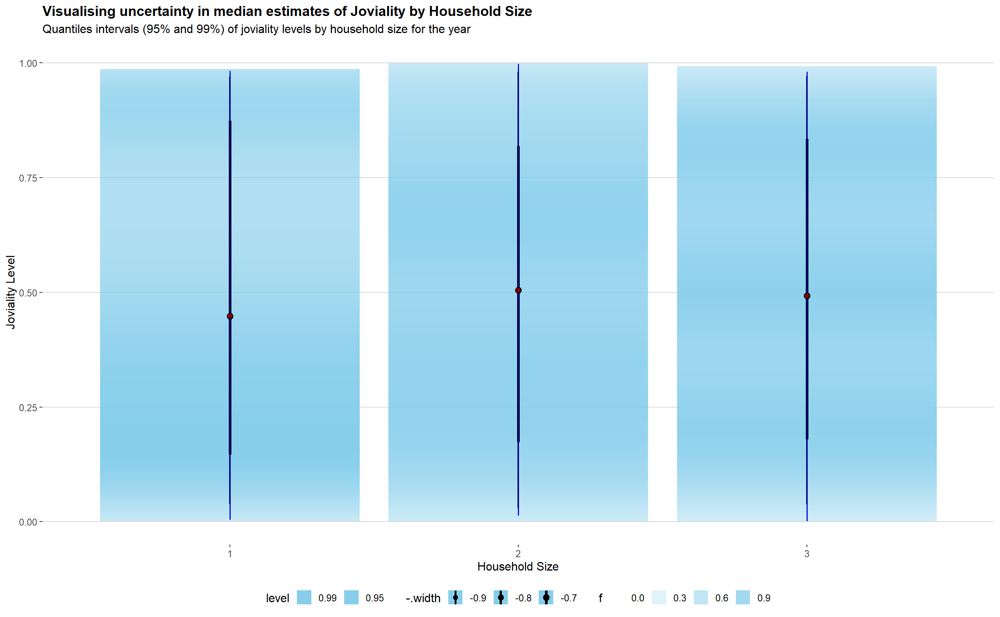

Show the code
knitr::opts_chunk$set(fig.width=14, fig.height = 14 * 0.618)knitr::opts_chunk$set(fig.width=14, fig.height = 14 * 0.618)City of Engagement, with a total population of 50,000, is a small city located at Country of Nowhere. The city serves as a service centre of an agriculture region surrounding the city. The main agriculture of the region is fruit farms and vineyards. The local council of the city is in the process of preparing the Local Plan 2023. A sample survey of 1000 representative residents had been conducted to collect data related to their household demographic and spending patterns, among other things. The city aims to use the data to assist with their major community revitalization efforts, including how to allocate a very large city renewal grant they have recently received.
The task is to apply the appropriate visual analytics concepts and methods to reveal the demographic and financial characteristics of the city of Engagement, using appropriate static and interactive statistical graphics methods. This exercise requires a user-friendly and interactive solution that helps city managers and planners to explore the complex data in an engaging way and reveal hidden patterns. The data should be processed by using appropriate tidyverse family of packages and the statistical graphics must be prepared using ggplot2 and its extensions.
Participants.csv contains information about the residents of City of Engagement that have agreed to participate in this study. The data consist of 1,011 rows and 7 columns.
| Columns | Description |
|---|---|
| participantId (integer) | unique ID assigned to each participant |
| householdSize (integer) | the number of people in the participant’s household |
| haveKids (boolean) | whether there are children living in the participant’s household |
| age (integer) | participant’s age in years at the start of the study |
| educationLevel (string factor) | the participant’s education level, one of: {“Low”, “HighSchoolOrCollege”, “Bachelors”, “Graduate” |
| interestGroup (char) | a char representing the participant’s stated primary interest group, one of {“A”, “B”, “C”, “D”, “E”, “F”, “G”, “H”, “I”, “J”}. Note: specific topics of interest have been redacted to avoid bias |
| joviality (float) | a value ranging from [0,1] indicating the participant’s overall happiness level at the start of the study |
FinancialJournal.csv contains information about financial transactions of the participants. The data consist of 1,513,636 rows and 4 columns.
| Columns | Description |
|---|---|
| participantId (integer) | unique ID corresponding to the participant affected |
| timestamp (datetime) | the time when the check-in was logged |
| category (string factor) | a string describing the expense category, one of {“Education”, “Food”, “Recreation”, “RentAdjustment”, “Shelter”, “Wage”} |
| amount (double) | the amount of the transaction |
The code chunk below uses p_load() of pacman package to check if tidyverse packages are installed on the computer. If they are, then they will be launched into R.
pacman::p_load(ggstatsplot, ggplot2, ggthemes, psych, plotly, corrplot, lubridate, ggpubr, plotly, hrbrthemes, ggrepel, RColorBrewer, gganimate, viridis, ggridges, ggrepel, testthat, hmisc, tidyverse, dplyr, gapminder, ggiraph, patchwork, DT, readxl, performance, parameters, see, ungeviz, plotly, crosstalk, ggdist, gganimate, gt, rstatix, png, webshot2)The two datasets were imported using the following code:
financial_data <- read_csv("data/FinancialJournal.csv")
participants <- read_csv("data/Participants.csv")The describe function from the Psych library is used to describe the two data sets.
psych::describe(participants) vars n mean sd median trimmed mad min max range
participantId 1 1011 505.00 291.99 505.00 505.00 375.10 0 1010 1010
householdSize 2 1011 1.96 0.79 2.00 1.96 1.48 1 3 2
haveKids 3 1011 NaN NA NA NaN NA Inf -Inf -Inf
age 4 1011 39.07 12.38 39.00 39.09 16.31 18 60 42
educationLevel* 5 1011 2.46 0.93 3.00 2.47 0.00 1 4 3
interestGroup* 6 1011 5.63 2.91 6.00 5.66 4.45 1 10 9
joviality 7 1011 0.49 0.29 0.48 0.49 0.37 0 1 1
skew kurtosis se
participantId 0.00 -1.20 9.18
householdSize 0.06 -1.41 0.02
haveKids NA NA NA
age -0.01 -1.21 0.39
educationLevel* -0.41 -0.96 0.03
interestGroup* -0.07 -1.24 0.09
joviality 0.08 -1.23 0.01psych::describe(financial_data) vars n mean sd median trimmed mad min max
participantId 1 1513636 480.90 295.89 464 474.85 373.62 0.00 1010.00
timestamp 2 1513636 NaN NA NA NaN NA Inf -Inf
category* 3 1513636 3.31 1.71 2 3.14 0.00 1.00 6.00
amount 4 1513636 20.05 111.77 -4 8.40 2.76 -1562.73 4096.53
range skew kurtosis se
participantId 1010.00 0.14 -1.17 0.24
timestamp -Inf NA NA NA
category* 5.00 0.83 -1.13 0.00
amount 5659.25 7.56 247.71 0.09Checking for missing values:
any(is.na(financial_data))[1] FALSEany(is.na(participants))[1] FALSEWe find that both data sets are devoid of missing values. We next take a look at the top values in the dataframe:
head(financial_data)# A tibble: 6 × 4
participantId timestamp category amount
<dbl> <dttm> <chr> <dbl>
1 0 2022-03-01 00:00:00 Wage 2473.
2 0 2022-03-01 00:00:00 Shelter -555.
3 0 2022-03-01 00:00:00 Education -38.0
4 1 2022-03-01 00:00:00 Wage 2047.
5 1 2022-03-01 00:00:00 Shelter -555.
6 1 2022-03-01 00:00:00 Education -38.0head(participants)# A tibble: 6 × 7
participantId householdSize haveKids age educationLevel inter…¹ jovia…²
<dbl> <dbl> <lgl> <dbl> <chr> <chr> <dbl>
1 0 3 TRUE 36 HighSchoolOrCollege H 0.00163
2 1 3 TRUE 25 HighSchoolOrCollege B 0.328
3 2 3 TRUE 35 HighSchoolOrCollege A 0.393
4 3 3 TRUE 21 HighSchoolOrCollege I 0.138
5 4 3 TRUE 43 Bachelors H 0.857
6 5 3 TRUE 32 HighSchoolOrCollege D 0.773
# … with abbreviated variable names ¹interestGroup, ²jovialityObserved Issues with the Data
The column “timestamp” in financialJournal.csv constains timestamps of financial transactions from 1 Mar 2022 till 28 Feb 2023 - one year’s worth of data. The time would be irrelevant and therefore the month and year would be extracted.
Error is data types:
Data Preparation in R: The two data sets are first merged matching “participantID”, then data type corrected, before creating a new month-year date column.
# The two datasets are first merged into a single dataframe: merged_data
merged_data <- merge(financial_data, participants, by = "participantId")
# The data type errors listed above are corrected and saved into a new dataframe: merged_data_cleaned
merged_data_cleaned <- merged_data %>%
# Correcting Column Data formats
mutate(participantId = as.integer(participantId),
householdSize = as.integer(householdSize),
joviality = as.numeric(joviality),
age = as.integer(age),
# Changing data type to ordinal string factor
educationLevel = factor(educationLevel,
levels = c("Low", "HighSchoolOrCollege", "Bachelors", "Graduate"),
ordered = TRUE),
# Changing data type to boolean
haveKids = as.logical(haveKids),
# Mutatating data from date time to just mth-year
month_year = format(as.Date(timestamp), "%m-%Y"))However, for clearer analysis, the transaction are summed across the various months to give the total monthly transaction amount and the resultant data frame saved as “df”:
# Summation of each participant's monthly expenditure/income
merged_data_summed <- merged_data_cleaned %>%
group_by(participantId, month_year, category) %>%
summarize(total_amount = sum(amount)) %>%
ungroup()
# Pivot the category column to become columns on its own
Monthly_expenditure <- merged_data_summed %>%
pivot_wider(names_from = category, values_from = total_amount, values_fill = 0)
df <- Monthly_expenditure %>%
left_join(merged_data_cleaned %>% distinct(participantId, householdSize, haveKids, age, educationLevel, interestGroup, joviality), by = "participantId")
head(df)# A tibble: 6 × 14
partici…¹ month…² Educa…³ Food Recre…⁴ Shelter Wage RentA…⁵ house…⁶ haveK…⁷
<int> <chr> <dbl> <dbl> <dbl> <dbl> <dbl> <dbl> <int> <lgl>
1 0 01-2023 -38.0 -265. -210. -555. 9048. 0 3 TRUE
2 0 02-2023 -38.0 -239. -320. -555. 8226. 0 3 TRUE
3 0 03-2022 -76.0 -268. -349. -1110. 11932. 0 3 TRUE
4 0 04-2022 -38.0 -266. -219. -555. 8637. 0 3 TRUE
5 0 05-2022 -38.0 -265. -383. -555. 9048. 0 3 TRUE
6 0 06-2022 -38.0 -257. -466. -555. 9048. 0 3 TRUE
# … with 4 more variables: age <int>, educationLevel <ord>,
# interestGroup <chr>, joviality <dbl>, and abbreviated variable names
# ¹participantId, ²month_year, ³Education, ⁴Recreation, ⁵RentAdjustment,
# ⁶householdSize, ⁷haveKidsThe dataframe is further manipulated (summed across the month to get yearly transaction amounts) to display the yearly expenditure/income and saved as df1:
# Creating a new dataframe that displays the yearly expenditure/income
df1 <- df %>%
group_by(participantId) %>%
summarise(Education = sum(Education),
Food = sum(Food),
Recreation = sum(Recreation),
Shelter = sum(Shelter),
Wage = sum(Wage), RentAdjustment = sum(RentAdjustment), .groups = 'drop') %>%
left_join(df %>% distinct(participantId, householdSize, haveKids, age, educationLevel, interestGroup, joviality), by = "participantId")
head(df1)# A tibble: 6 × 13
particip…¹ Educa…² Food Recre…³ Shelter Wage RentA…⁴ house…⁵ haveK…⁶ age
<int> <dbl> <dbl> <dbl> <dbl> <dbl> <dbl> <int> <lgl> <int>
1 0 -494. -3142. -4384. -7215. 1.10e5 0 3 TRUE 36
2 1 -494. -3167. -6638. -7215. 9.64e4 0 3 TRUE 25
3 2 -167. -3467. -4172. -7235. 8.51e4 0 3 TRUE 35
4 3 -494. -3396. -4704. -7215. 8.23e4 0 3 TRUE 21
5 4 -167. -3262. -6316. -18410. 1.06e5 4809. 3 TRUE 43
6 5 -167. -4145. -5139. -7800. 2.32e4 0 3 TRUE 32
# … with 3 more variables: educationLevel <ord>, interestGroup <chr>,
# joviality <dbl>, and abbreviated variable names ¹participantId, ²Education,
# ³Recreation, ⁴RentAdjustment, ⁵householdSize, ⁶haveKidsGiven the task which is to use the data to assist city planners in disbursing a large city renewal grant for major community revitalization efforts, appropriate static and interactive statistical graphics methods would be applied to the data to explore the complex data in an engaging way and reveal hidden patterns.
A look at the distribution of the data with joviality as the target variable.
ggplot(df1) +
aes(x = joviality) +
geom_histogram(bins = 60L, fill = "#112446") +
labs(
x = "Joviality",
y = "Count of Participants",
title = "Histogram of Joviality of Participants",
subtitle = "This plot shows the distribution of joviality scores - which seems to be uniformly distributed. "
) +
theme_minimal()
set.seed(1234)
gghistostats(
data = df1,
x = joviality,
type = "bayes",
test.value = 50,
xlab = "Joviality"
) +
labs(
x = "Joviality",
y = "Count of Participants",
title = "Histogram of Joviality of Participants",
subtitle = "This plot shows the distribution of joviality scores - which seems to be uniformly distributed. "
) +
theme_minimal()
set.seed(1234)
gghistostats(
data = df1,
x = Wage,
type = "bayes",
test.value = 60,
xlab = "Wage"
) +
labs(
x = "Wage",
y = "Count of Participants",
title = "Histogram of Wage of Participants",
subtitle = "This plot shows the distribution of joviality scores - which seems to be right skewed. "
) +
theme_minimal()
This chart shows that the distribution of wages among participants is right skewed.
ggplot(data=df1,
aes(x= Wage,
y=joviality, color = educationLevel)) +
geom_point() +
geom_smooth(size=0.5) +
theme_minimal() +
labs(title = 'Scatterplot of Joviality levels by Wage with Smoothing Line',
y = "Joviality",
x = "Wage") +
theme(plot.title = element_text(face = "bold", size = 12),
axis.title.x = element_text(size = 10, hjust = 1),
axis.title.y = element_text(size = 10),
axis.text = element_text(size = 8))
Together with the histogram above, this chart above show that there are outliers in the data, where a number of yearly wage for individuals amount to <$3000. This is unusual. However, further investigation showed that these individuals were had household sizes of 2 or more, with those having household sizes of 3 were consistent with having kids. The logical explanation for this is that these are individuals who are married, and are either house-wives or house-husbands. The wage that is deposited into their accounts could be welfare from the state. As such, for future wage-related analysis, these outliers would be omitted.
# Filtering outliers
df2 <- df1 %>%
filter ((Wage >= 3000))After the outliers have been removed, the following chart shows a clearer picture of the trend between wage and joviality:
ggplot(data=df2,
aes(x= Wage,
y=joviality, color = educationLevel)) +
geom_point() +
geom_smooth(size=0.5) +
theme_minimal() +
labs(title = 'Scatterplot of Joviality levels by Wage with Smoothing Line',
y = "Joviality",
x = "Wage") +
theme(plot.title = element_text(face = "bold", size = 12),
axis.title.x = element_text(size = 10, hjust = 1),
axis.title.y = element_text(size = 10),
axis.text = element_text(size = 8))
This chart shows an interesting trend that is somewhat counter-intuitive: it seems that wage has a diminishing returns in joviality scores as wage increases across the education levels. It initially increases or starts off high as wage increases, before gradually slowing.
Normality Assumption Before performing the necessary hypothesis testing, we need to choose between parametric and non-parametric test. As such nortest::ad.test() will be used to perform Anderson-Darling test with confidence level of 95% to test the null hypothesis that the following data sets are normally distributed:
Given that joviality is the target variable, we perform the normality test on joviality scores of the participants:
H0: The sample joviality data is not significantly different from a normal population
H1: The sample joviality data is significantly different from a normal population
qq <- ggplot(df1,
aes(sample=joviality)) +
stat_qq() +
stat_qq_line()
sw_t <- df1 %>%
shapiro_test(joviality) %>%
gt()
tmp <- tempfile(fileext = '.png')
gtsave(sw_t, tmp)
table_png <- png::readPNG(tmp, native = TRUE)
qq + table_png
Based on the result above, the null hypothesis is rejected as the p-value below 0.05 critical value. As such, we are not able to confirm normality assumption for distribution of joviality as a target variable and future test would be non-parametric
# Linear Regression Models with Joviality as the Target Variable
model <- lm(joviality ~ Education + Food + Recreation +
Shelter + Wage + RentAdjustment + householdSize + haveKids + age + educationLevel + interestGroup, data = df)
check_c <- check_collinearity(model)
plot(check_c)
ggscatterstats(
data = df,
x = Recreation,
y = joviality,
marginal = FALSE,
)
set.seed(123)
# creating a plot
p <- ggscatterstats(
df2,
x = Wage,
y = joviality,
#label.var = educationLevel
#label.expression = Sepal.Length > 7.6
) +
ggplot2::geom_rug(sides = "b")
# looking at the plot
p
# extracting details from statistical tests
extract_stats(p)$subtitle_data
# A tibble: 1 × 14
parameter1 parameter2 effectsize estimate conf.level conf.low
<chr> <chr> <chr> <dbl> <dbl> <dbl>
1 Wage joviality Pearson correlation -0.296 0.95 -0.355
conf.high statistic df.error p.value method n.obs conf.method
<dbl> <dbl> <int> <dbl> <chr> <int> <chr>
1 -0.234 -9.18 878 3.03e-19 Pearson correlation 880 normal
expression
<list>
1 <language>
$caption_data
# A tibble: 1 × 17
parameter1 parameter2 effectsize estimate conf.level
<chr> <chr> <chr> <dbl> <dbl>
1 Wage joviality Bayesian Pearson correlation -0.295 0.95
conf.low conf.high pd rope.percentage prior.distribution prior.location
<dbl> <dbl> <dbl> <dbl> <chr> <dbl>
1 -0.357 -0.237 1 0 beta 1.41
prior.scale bf10 method n.obs conf.method expression
<dbl> <dbl> <chr> <int> <chr> <list>
1 1.41 1.36e16 Bayesian Pearson correlation 880 HDI <language>
$pairwise_comparisons_data
NULL
$descriptive_data
NULL
$one_sample_data
NULL
$tidy_data
NULL
$glance_data
NULLUsing the violin plot charts visually depict the one-way annova test done on the variances in joviality among different educational level, we find that there is a statistical difference between the means of the different educational level group, with higher education levels having higher mean joviality scores. Intuitively, looking at the mean wages across the different educational level, the one-way annova test reveal that they are also statisically different, with higher educational levels, having higher mean wages.
# Exploring the Variances between Wages for participants of different education levels
p1 <- ggbetweenstats(
data = df2,
x = educationLevel,
y = Wage,
grouping.var= category,
type = "np",
mean.ci = TRUE,
pairwise.comparisons = TRUE,
pairwise.display = "s",
p.adjust.method = "fdr",
messages = FALSE,
title = "Differences in wage for different education levels",
package = "ggthemes", palette = "Tableau_10"
)
p2 <- ggbetweenstats(
data = df2,
x = educationLevel,
y = joviality,
grouping.var= category,
type = "np",
mean.ci = TRUE,
pairwise.comparisons = TRUE,
pairwise.display = "s",
p.adjust.method = "fdr",
messages = FALSE,
title = "Differences in Joviality for different education levels",
package = "ggthemes", palette = "Tableau_10"
)
p2 + plot_annotation(
title = 'One-way Annova of Joviality across different Education Levels',
subtitle = 'There is significant difference between joviality of individuals of the different education levels, with more highly educated individuals having a higher likelihood of greater joviality',
theme = theme(plot.title = element_text(face = "bold", size = 18)))p1 + plot_annotation(
title = 'One-way Annova of Yearly Wage across different Education Levels',
subtitle = 'There is significant difference between the yearly wage of individuals of the different education levels, with more highly educated individuals having a higher likelihood of better wages',
theme = theme(plot.title = element_text(face = "bold", size = 18)))However, the following chart (repeated from the EDA done above) shows a diminishing relationship - as wages increases, the joviality score decreases.
ggplot(data=df2,
aes(x= Wage,
y=joviality, color = educationLevel)) +
geom_point() +
geom_smooth(size=0.5) +
theme_minimal() +
labs(title = 'Scatterplot of Joviality levels by Wage with Smoothing Line',
y = "Joviality",
x = "Wage") +
theme(plot.title = element_text(face = "bold", size = 12),
axis.title.x = element_text(size = 10, hjust = 1),
axis.title.y = element_text(size = 10),
axis.text = element_text(size = 8))
# looking at the difference betwwen joviality by household size - there are differences
ggbetweenstats(
data = df,
x = householdSize,
y = joviality)+
theme_minimal()
# looking at the difference between joviality by household size - not much difference
ggbetweenstats(
data = df,
x = haveKids,
y = joviality,
grouping.var= category,
type = "np",
mean.ci = TRUE,
pairwise.comparisons = TRUE,
pairwise.display = "s",
p.adjust.method = "fdr",
messages = FALSE,
title = "Differences in jovility between parents and non-parents",
package = "ggthemes", palette = "Tableau_10"
)
# Filter the data based on the desired education level
ggplot(data=df1,
aes(x = Wage,
y = joviality, color = haveKids)) +
geom_point(size=1) + geom_smooth(data=df1, aes(x = Wage,
y = joviality, color = haveKids)) +
coord_cartesian(xlim=c(0,180000),
ylim=c(0,1)) +
facet_wrap(~ educationLevel, nrow = 4)
# Visual for Significant Test of Association between education level and joviality
df_mutated <- df1 %>%
mutate(joviality_bins =
cut(joviality,
breaks = c(0,0.25,0.5,0.75,100))
)
ggbarstats(df_mutated,
x = joviality_bins,
y = educationLevel)
ggscatterstats(
data = df,
x = Recreation,
y = joviality,
marginal = FALSE,
)
While the above chart shows that there is a positive correlation between expenditure on recreation and joviality, we need to further divide the data to gain insights of greater fidelity.
set.seed(123)
# Plot of joviality vs expenditure on Recreation for Household Sizes
ggscatterstats(
df1,
x = Recreation,
y = joviality,
) +
ggplot2::geom_rug(sides = "b") +
facet_wrap(vars(householdSize))
Spiltting the data by household size, this chart show comparing joviality against expenditure on recreation across the different household sizes show that there are diminishing effect on joviality for expenditure on recreation as the household size increases.
# Visual for Significant Test of Association between Interest Group and Joviality
df_interest <- df1 %>%
mutate(joviality_bins =
cut(joviality,
breaks = c(0,0.25,0.5,0.75,100))
)
ggbarstats(df_interest,
x = joviality_bins,
y = interestGroup)
With approximately an equal spread of participants across the various interest group, this visual explores the association between Interest Group and Joviality. Joviality values are binned into 4 equal group, with higher Joviality as more desirable. It is immediately apparent that two interest groups (C and E) are standouts with higher percentages of very high joviality (>0.75) in green.
# looking at the difference betwwen joviality by interest group - there are differences
ggbetweenstats(
data = df,
x = interestGroup,
y = joviality)+
theme_minimal()ggplot(df1, aes(x = joviality, y = interestGroup, fill = educationLevel)) +
geom_density_ridges(alpha=0.6) +
theme_ridges() +
theme() + plot_annotation ()ggbarstats(df1,
x = educationLevel,
y = interestGroup)Looking at the ridgeplot above which displays the joviality by interest groups, with the added fidelity of education level, a few patterns are apparent: there are noticeable peaks at the lower joviality levels of 0-0.5. These peaks occur for the segments Graduates in interest Group A, and Low in interest Groups F, G and I.
Given that point estimates are not precise representation of the true data value, the following charts will help us to visualise the observed data, displaying the target quantile confidence levels (95%), and that the true (unknown) estimate will lie within this interval.
# Base ggplot
ggplot(
data = df1,
aes(x = householdSize,
y = joviality)) +
# Adding a gradient interval
stat_gradientinterval(
fill = "skyblue",
show.legend = TRUE) +
# Using stat_pointinterval to plot the points and intervals
stat_pointinterval(
aes(interval_color = stat(level)),
.width = c(0.95, 0.99),
.point = median,
.interval = qi,
point_color = "darkred",
show.legend = FALSE) +
# Defining the color of the intervals
scale_color_manual(
values = c("blue2", "darkblue"),
aesthetics = "interval_color") +
#Title and subtitle
labs(title = 'Visualising uncertainty in median estimates of joviality by Household Size',
subtitle = 'Quantiles intervals (95% and 99%) of joviality levels by household size for the year',
x = "Household Size",
y = "Joviality Level") +
theme_hc() +
theme(plot.title = element_text(face = "bold", size = 18),
plot.subtitle = element_text(size = 14),
axis.text.x = element_text(angle = 30, hjust = 1))
This plot shows that while the mean joviality level for married individuals (household size = 2) and married with kid (household size = 3) seems higher by the point estimate, there is an uncertainty associated with it and that it ranges in a band as depicted by the blue bar.
library("ungeviz")
ggplot(data = df1,
(aes(x = factor(educationLevel),
y = joviality))) +
geom_point(position = position_jitter(
height = 0.3,
width = 0.05),
size = 0.4,
color = "#0072B2",
alpha = 1/2) +
geom_hpline(data = sampler(25,
group = educationLevel),
height = 0.6,
color = "#D55E00") +
theme_bw() +
transition_states(.draw, 1, 3)This plot also depicts the uncertainty involved in the segregating residents of the city by education level, that it cannot be said for certain that education level is a predictor of higher joviality given the uncertainty involved.
The various plots have been useful to visually depict key trends in the data that helps city planners to make decisions.